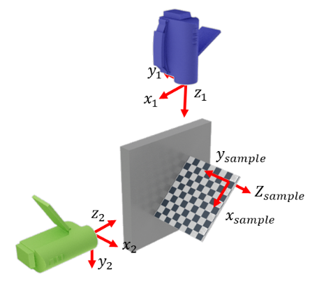

Camera matrices calibration¶
The objective of teh calibration procedure is to find:
The camera intrinsic matrix which results from the camera geometry \(F\).
The transormation matrix between the sample and the camera coordinate systems \(M\).
The intrinsic matrix is typically obtained by taking several pictures of a checkboard in different orientations. For more information, see The openCV documentation.
All the calibration functions are implemented in the calibration module and are largely inspired from the following source.
The intrinsic camera matrix is recovered using the provided chessboard picture by the calibration.calib_len.get_cam_matrix() function
-
calibration.calib_len.get_cam_matrix(calib_pics, chess_dim, chess_case_len)[source]¶ Finds the camera intrinsinc and distortion matrices
- Parameters
calib_pics – calibration chessboard pictures
chess_dim – Number of chess cases -1
chess_case_len – chess case length
pic – default None, picture frame to print in the gui
- Returns
camera intrinsinc and distortion matrices
The transformation matrix between each camera and the sample coordinate system can be obtained by taking a picture of a chessboard positioned in the sample coordiate system, e.g. at a 90° angle from the sample, so that it is seen by both camera simultaneously, as shown in the picture below.
The chessboard position is then computed using the solvePnP opencv function which provides the rotation Rodrigues vector and translation vector between the two coordinate systems.
Before computing the transformation matrix the chessboard orientation is recovered by detecting the circles positionned on the chessboard with the calibration.chessboard_tools.get_blob_position() function. The chessbard coordinate system is then rotated by the calibration.chessboard_tools.change_chess_ori() function. This is necessary to ensure that the two transformation matrix obtained for the two cameras will chose the same orientation for the chessboard coordinate system.
All of the step to find a camera transformation matrix with the right orientation are performed by the calibration.find_sample_ori.get_transfo_mat() function.
-
calibration.find_sample_ori.get_transfo_mat(calib_pic_file, mtx, dist, chess_dim, chess_case_len, imgpoints=None)[source]¶ Finds the transformation matrix between the camera’s frame and the sample
- Parameters
calib_pic_file – picture file of the chessboard
mtx – camera intrinsinc matrix
dist – camera distorsion matrix
chess_dim – Number of cases per chess side minus one
chess_case_len – real life lenth of the chess square
- Returns
R, T Rotation Rodrigues vector and Translation vector
The function calibration.find_sample_ori.plot_proj_origin() plots the reprojected chessboard points as well as the projection of the coordinate system axes and origin to check that the quality of the calibration. One must ensure that
The projected chess board points match effectively with the chessboard corners
The projected axes are consistent between the two cameras.
Finally, the whole calibration procedure can be performed at once using the calibration.calibrate_stereo() function.
-
calibration.main.calibrate_stereo(left_lens, right_lens, left_pos, right_pos, calib_folder, chess_dim, chess_case_len)[source]¶ Calibrate a stereocamera system given calibration file names
- Parameters
left_lens,right_lens – path of the right and left camera lens calibration pictures
left_pos,right_pos – path of the right and left camera position pictures
calib_folder – calibration result folder
chess_dim – Number of chess cases -1
chess_case_len – chess case length
- Returns
nothing but generates the camera calibration files in the “res folder” mtx_top,mtx_left (camera intrinsinc matrix), dist_top,dist_left (passage matrix from the sample to
The function will save the calibration files contaning each camera matrices in the calibration folder, in a format that can be read by the analysis and post-processing programs.
Note
As it is computed by opencv, the camera rotation matrix is given as a Rodrigues vector.